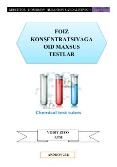

FKKimyo fanidan foiz konsentratsiyasiga oid maxsus testlar to'plami.
Ushbu qo'llanma kimyo fanidan foiz konsentratsiyasiga oid maxsus test masalalari va ularning yechimlarini o'z ichiga oladi. O'quvchilar va abituriyentlar uchun eritmalarga doir masalalarni mustaqil yechish ko'nikmalarini oshirishga mo'ljallangan.